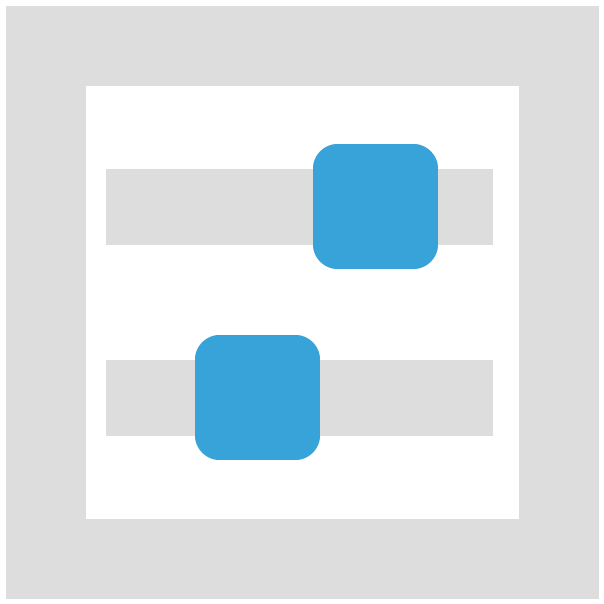

Teilchenzoo
Optionen
Teilch-o-mat
In der Teilchenphysik gibt es Leichtgewichte, Rampensäue und Quasselstrippen. Unser »Teilch-o-mat« zeigt, welches Teilchen am besten zu dir passt!
Filme
Der »Teilchenzoo« zeigt nicht nur Teilchen, sondern auch echte Physikerinnen und Physiker. Sieben unterhaltsame Videos nehmen Dich mit in die Welt der Teilchenphysik.
Steckbriefe
Du willst es richtig wissen und mehr Informationen zu den Themen der Ausstellung abrufen? Detailinfos zu den Bewohnern des »Teilchenzoo« gibt es hier.
Woraus ist die Welt gemacht?
Seit Jahrtausenden fragen sich Menschen: Aus welchen Bausteinen ist die Welt gemacht? Die Ausstellung »Teilchenzoo« stellt die Antworten der modernen Teilchenphysik vor und begibt sich dabei auf die Spuren von Higgs, Quarks und Photonen.
Öffnungszeiten und Preise
Die Sonderausstellung Teilchenzoo im Universum® Bremen findet von 26. September 2013 bis 30. Juni 2014 statt,
- montags bis freitags: von 9:00 bis 18:00 Uhr
- samstags, sonntags und feiertags: von 10:00 bis 18:00 Uhr
Die Sonderausstellung kann mit einem Ticket des Universum® Bremen besucht werden. Zu den Eintrittspreisen
Ort und Hinkommen
Das Universum® Bremen befindet sich
Wiener Str. 1a
28359 Bremen
Mit dem Auto
Sie erreichen das Universum® über die Autobahn A 27 Abfahrt Bremen Universität. Nach Verlassen der Autobahn biegen Sie an der zweiten Möglichkeit rechts in die Universitätsallee ein. Nach etwa 500 Metern sehen Sie das Universum® auf der rechten Seite.
Das Universum® Bremen liegt außerhalb der Bremer Umweltzone.
Mit öffentlichen Verkehrsmitteln
Die Straßenbahnlinie 6 bringt Sie in 15 Minuten vom Hauptbahnhof Richtung Universität zum Universum® Bremen (Haltestelle Universität/NW1). In etwa 5 Gehminuten entlang der Universitätsallee erreichen Sie das Universum® Bremen.